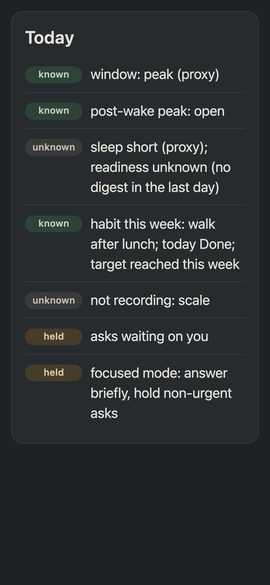

No magic number
In one study from a 2024 systematic review, individuals took 4 to 335 days to form a health habit; across studies, medians were about two months.
Singh et al., Healthcare 2024A Hermes Agent plugin · open source · MIT
Bryan Johnson's Blueprint measures everything with a team of doctors. Limitless asks what an app and an algorithm can do for anyone: one small change at a time, a prediction locked before you start, and an honest read of what happened.
01 · The loop
It never prescribes. It suggests one low-burden change, writes down what you expect before you start, and keeps the result whether it supports you or not.
Foundation sets the ceiling for the rest. In one cohort of 60,977 adults, regular sleep predicted mortality risk better than sleep length (an association, not proof of cause).
02 · How it will adapt Vision
The plan: start from what large studies show, then move toward what works for you. Misses make the next step smaller, streaks make it bigger, and a skipped day is unlogged, never a failure. Try the rule:
Next step: two minutes. Tap a day.
Illustrative rule for the roadmap: two misses in a row shrink the step, three done in a row grow it. Not built yet.
In one study from a 2024 systematic review, individuals took 4 to 335 days to form a health habit; across studies, medians were about two months.
Singh et al., Healthcare 2024Machine learning on 12 million gym check-ins and 40 million handwashes: gym habits took months, handwashing weeks, and people differed in what cues drove them.
Buyalskaya et al., PNAS 2023In a 61,293-person megastudy of 54 programs, expert forecasters could not predict which would work best. The best one rewarded coming back after a miss.
Milkman et al., Nature 2021Learning was fastest near 85% success for a broad class of learners. Limitless would use it as a target band, an analogy rather than a habit study.
Wilson et al., Nat. Commun. 2019In HeartSteps, a suggestion's effect on steps faded over weeks; a per-person bandit re-learns when and whether to nudge. So the policy has to adapt.
Liao et al., HeartSteps V2Aggregated N-of-1 trials with Bayesian hierarchical models: each person borrows strength from everyone, and their own effect stays their own.
Bayesian models for N-of-1 trials
03 · Hermes does the small part Built today
The card is real plugin output (limitless/ui_card.py) on the repo's synthetic example lines.
04 · The network Part built · part vision
Your wearable, your focus, your learning and your voice, each its own open-source project, read by the plugin on your own machines. "Adapter built" means the plugin's reader for it exists in the code today.
05 · Private by design Built today
06 · Roadmap
Plugin tools and state card, the send gate, event jobs, one-tap habit weeks, locked predictions.
Four weekly cycles with outcome receipts; wearable sleep, rides and body trend as inputs; decision windows on every ask.
Difficulty from your own record, a sweet-spot band, nudges that re-learn when they wear off.
Population priors from published studies, then opt-in sharing of what worked, never raw data.
07 · Install
# 1. put the plugin where Hermes looks for it
git clone https://github.com/kvnloo/limitless ~/.hermes/plugins/limitless
# 2. add it to plugins.enabled in ~/.hermes/config.yaml
plugins:
enabled:
- limitlessEvery tool works with no data: it says "unknown" and why. Point it at your own sources in the README.